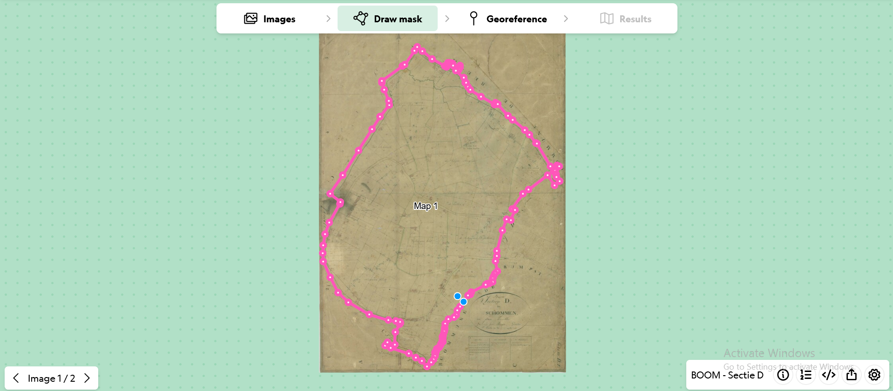
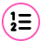

Welkom op de allereerste Schelde Mapathon!
In deze handleiding vind je alle nodige informatie om de plannen van het Primitief Kadaster te georefereren.
Georefereren?
In het kader van het Artemis-project willen onderzoekers van de Universiteit Gent en de Universiteit Antwerpen de oudste kadasterplannen beter bruikbaar maken.
Dit kan onder meer door deze plannen te koppelen aan hedendaagse geografische coördinaten (georefereren). Georefereren maakt het mogelijk om de gedigitaliseerde plannen op de juiste
positie te plaatsen bovenop een hedendaagse en/of andere reeds gegeorefereerde historisch kaart. Het proces van georefereren vergt echter tijd en kennis van het landschap.
Deze Mapathon staat daarom in het teken
van het zoeken naar overeenkomende punten tussen de oudste kadasterplannen en het hedendaags landschap. Hiervoor maken we gebruik van de Allmaps Editor.

Allmaps gebruiken
Allmaps biedt digitale instrumenten om gedigitaliseerde (historische) kaarten eenvoudig te georefereren, te presenteren en te verkennen De belangrijkste toepassingen zijn Allmaps Editor en Allmaps Viewer.

Allmaps Editor biedt een online omgeving waarin specifieke kaarten kunnen worden geopend. Deze kaarten worden naast een hedendaagse kaart weergegeven, zodat je als gebruiker eenvoudig overeenkomende punten kunt identificeren

Allmaps Viewer maakt gebruik van de resultaten uit Allmaps Editor om (historische) kaarten bovenop een hedendaagse kaart te tonen. De applicatie biedt bovendien handige functies ,zoals het verwijderen van de achtergrondkleur, om de analyse te vergemakkelijken.
1. Een kaart openen in Allmaps Editor
- Open het overzicht van plannen via deze link.
- Kies (een deel van) een gemeente waar je wilt aan werken en vul jouw naam in de kolom 'Uitgevoerd door' in.
- Klik vervolgens op de link in de kolom 'georeferentie'. Hiermee wordt je doorgestuurd naar Allmaps Editor, waar de kaarten van de door jou gekozen gemeente automatisch worden geopend.
2. Een masker tekenen
Staat er een geel icoon rechtsonder het kaartblad? Dan betekent dit dat er al een masker is getekend. Het masker zorgt ervoor dat
alleen de kaart zelf wordt weergegeven en niet de randen. Zo kunnen alle kaarten later eenvoudig aan elkaar worden gekoppeld. Als je het geel icoon ziet, kan je direct doorgaan naar stap 3 'een kaart georefereren'.
Staat dit icoon er niet? Volg dan onderstaande stappen
- Dubbelklik op een kaart, of selecteer een kaart en klik bovenaan op 'Draw mask'.
- Teken een figuur die enkel de kaart zelf omvat. Plaats punten langs de kaartrand (die vaak met een kleur is aangeduid) totdat je een gesloten figuur hebt.
- Maak je een fout, je plaatst bv. een punt teveel? Ga gewoon verder met tekenen. Nadat je de figuur hebt gesloten door met je muis terug op het eerste punt te klikken, kan je de punten nog aanpassen.
Het resultaat ziet er dan als volgt uit.

3. Een kaart georefereren
- Klik bovenaan op 'Georeference'. De historische kaart verschijnt naast een hedendaagse kaart.
- Zoom in op de hedendaagse kaart naar de regio die op de historische kaart wordt weergegeven. Je kan ook zoeken naar een plaatsnaam via het vergrootglas.
- Zoek naar herkenbare punten die op beide kaarten overeenkomen, zoals ongewijzigde perceelsgrenzen, kruispunten of een herkenbaar gebouw zoals een kerk.
- Klik eerst op het punt op de historische kaart en daarna op het overeenkomende punt op de hedendaagse kaart. Er verschijnt een genummerd punt op beide kaarten.
- Herhaal dit voor verschillende delen van de kaart. Zorg ervoor dat je minimaal tien goed verspreide punten aanduidt.
Handig om te weten:
Toegevoegde punten verwijderen
- Klik met de rechtermuisknop op het punt dat je wilt verwijderen. Doe dit zowel op de historische als op de hedendaagse kaart.
- Je kan ook klikken op het roze 'Maps' icoon (rechtsonder).
- Je krijgt een overzicht van alle toegevoegde punten. Zoek het juiste puntnummer en klik op het vuilbakje ernaast. Bevestig vervolgens dat je het punt wil verwijderen.
- Klik zeker niet op het vuilbakje rechts naast 'Edit or import mask...'. Hiermee verwijder je het volledige masker en daarmee alle eraan gekoppelde punten.
De referentiekaart wijzigen
- Klik rechtsboven op het tandwiel (meest linkse icoon).
- Kopieer een van de volgende links:
- Grootschalig referentiebestand: https://geo.api.vlaanderen.be/GRB/wmts?SERVICE=WMTS&VERSION=1.0.0&REQUEST=GetTile&LAYER=grb_bsk&STYLE=&FORMAT=image/png&TILEMATRIXSET=GoogleMapsVL&TILEMATRIX={z}&TILEROW={y}&TILECOL={x}
- Topografische kaart Vandermaelen (1846-1854): https://geo.api.vlaanderen.be/HISTCART/wmts?SERVICE=WMTS&VERSION=1.0.0&REQUEST=GetTile&LAYER=vandermaelen&STYLE=&FORMAT=image/png&TILEMATRIXSET=GoogleMapsVL&TILEMATRIX={z}&TILEROW={y}&TILECOL={x}
- Ferraris kaart (1771-1778): https://geo.api.vlaanderen.be/HISTCART/wmts?SERVICE=WMTS&VERSION=1.0.0&REQUEST=GetTile&LAYER=ferraris&STYLE=&FORMAT=image/png&TILEMATRIXSET=GoogleMapsVL&TILEMATRIX={z}&TILEROW={y}&TILECOL={x}
- Grootschalig referentiebestand:
- Plak deze link bij 'Custom XYZ layer:' en druk op 'Load'.
- De referentiekaart wordt bijgewerkt. Mogelijks moet je inzoomen om de juiste regio te zien.
De historische kaart draaien
- Op Windows: houd de 'ctrl' toets ingedrukt en versleep de linker kaart.
- Op Mac: houd de 'option' toets ingedrukt en versleep de linker kaart
4. Het resultaat bekijken
Je kan het resultaat van jouw toegevoegde punten op twee manieren bekijken: via de knop 'Results' rechts bovenaan en via Allmaps Viewer.
Results
- De knop 'Results' toont de historische kaart bovenop een hedendaagse kaart. Hier kan je niets aanpassen.
- Controleer of jouw kaart ongewenste vervormingen vertoont. Dit kan duiden op een fout bij het plaatsen van de punten. Bij een fout ga je terug naar de georeferentie en zoek je welk punt de vervorming veroorzaakt.
Allmaps Viewer
- Druk onderaan op het deel-icoon (tweede van rechts).

- Kies 'Current image' (de geselecteerde kaart) of 'All images' (alle kaarten van de gemeente) en klik op het springplank-icoon naast 'View in Allmaps Viewer'.

- De uitgesneden kaart(en) opent/openen in Allmaps Viewer. Hier kan je wel analyses uitvoeren. Dat kan via enkele sneltoetsen:
- 'Spatie': kaart doorzichtig maken
- 'M': masker weergeven
- 'T': transformatie wijzigen
- 'D': vervormingen (distorties) weergeven
- Rechtermuisklik: volgorde van de kaarten aanpassen (bv. kaart naar voor halen)
En hierna?
Heb je de smaak te pakken? Bezorg ons dan zeker jouw contactgegevens. We houden jou op de hoogte van toekomstige evenementen en bekijken samen hoe je verder kunt bijdragen aan de ontsluiting en bruikbaarheid van historische kaartencollecties.